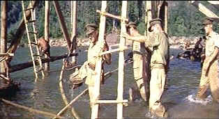

| Bridge
on the River Kwai/A,B+ |
| Columbia/1957/162/ANA 2.55 |
I have carried the whistling theme of
Colonel Bogie's march with me through all the years since my first adolescent exposure
to the masterfully compelling The Bridge on the River Kwai. Hearing Colonel
Nicholson's troops once again whistling the tune to their ragged but disciplined march through the
jungle sent chills down my spine. Perhaps the magnificent elements of The Bridge on the River
will touch you in some like way. Kwai is one of film history's
great screen classics that few contemporary movie lovers have experienced in some reasonable
approximation of the superb polish with which it was crafted by director David Lean. Here's
the opportunity, and if at all possible catch it on the biggest screen you
can.
 |
| Nicholson takes command of the
construction. ©Columbia |
Bridge on the River Kwai captures
the horror of a Japanese POW camp in the Burmese jungles during World War II. But Kwai just isn't
about surviving a POW camp. It's incredible psychological drama pitting two fierce warriors against
one another. The battle of wills between senior British Officer Colonel Nicholson and Japanese
prison commandant Colonel Saito is a fascinating death defying duel shaped by the unyielding
principles of the two combatants. Director Lean mines the complexity of the relationship with rare
insight. The shift in power occurs with astounding brilliance. While the psychological battle
between the Japanese commander and his British counterpart is drawn in excruciatingly painful
scenes of confrontation, the bridge becomes the pivotal character in the drama. As the spectacle of
its construction is painstakingly detailed by the director, the bridge takes on a life of its own,
dominating Colonel Nicholson where the threats and torture of Colonel Saito have failed. The bridge
drives Nicholson beyond all logic in his attempt to survive the POW camp. The life of the bridge
becomes more important than the survival of his men. As the wooden struts are pieced
together, Nicholson's own strength begins to build, obsessed with the mission to complete the
bridge at all costs.
The concurrent depiction of American Naval Officer Shears' escape and subsequent
return with a team to blow up the bridge integrates brilliantly with the POW story. The Shears
character gets more time to develop and the introduction of Major Warden provides an interesting
comparison to Nicholson.
First construction then destruction of the bridge is a monumental screen
depiction. David Lean meticulously controlled every aspect of the production. Not only
did Lean produce images of enduring beauty, he guided his actors, stars and supporting players, to
superb performances.
Guinness's portrait of twisted martinet Nicholson won the
Academy Award for Best Actor in 1957, and indeed, it is one of cinema's most unforgettable
performances. Hayakawa's Saito was nominated for Best Supporting Actor. Guinness and Hayakawa are
marvelous matched pair, pulling the bridge behind them with blinders affixed to their sense. But
William Holden is equally brilliant as Shears. Holden's performance is often overlooked. Perhaps he
makes it look too easy. Holden owns Shears and breaths life into every cynical observation. Jack
Hawkins' dutiful Colonel Warden, wonderfully convincing, is the flip side to Nicholson.
The Bridge on the River Kwai went on to win a total of seven Oscars
including Best Picture, Best Director, the aforementioned Best Actor, Best Screenplay Adaptation,
Best Cinematography, Best Editing and Best Music
Scoring.
Lean's direction is flawlessly economical. There is
not a a wasted moment through the almost three hours of film as the bridge moves toward its date
with destiny. The climax is an example of thrilling film editing as tension mounts cut by cut. The
cinematography by Jack Hildyard is breathtaking. His lens captures the dark wall of the jungle and
stirring beauty and power of nature. Malcolm Arnold's score uses the signature Colonel Bogie theme
to explore the military chords.
Though the elements are not in perfect shape, overall there is little
wanting in the visual power of this DVD presentation. There are several skipped frames making for
an uncomfortable splice or two and the opening shots seem like they were transferred from a cereal
box, but for the most part the color is vital, the images sharp, and contrast range very good. I
thought the difficult background details like jungle trees faired very well. The structure of the
bridge was also very stable. Black level is excellent and contrast range gives the picture
plenty of pop. The Dolby Digital 5:1 remix is very good. Jungle ambiance and the racing river are
captured with equal ease. Dialogue is clear and crisp. Watching this DVD of The Bridge on the
River Kwai is a special treat not to be missed.
The documentary on the two-disc set is okay. There are some pearls
amongst the shucked oysters that these documentaries often are. I had forgotten that William Holden
was added to the production because Columbia felt they needed an American star. So Shears, one of
the great characters in the film, though a bit derivative of Sefton in Stalag 17, was added
to the story. The entire alternate coda of Shears' escape and the subsequent team coming back to
blow the bridge was added because of the Shears character. It works brilliantly. Pierre Boulle said
he had wished he had written that material.
|
|
|
|

Selections from the Feature Archive include articles on
Akira Kurosawa, Frank
Darabont, Blonde Bimbos, Hollywood Street Gangs, or Vietnam: The
Hollywood Pariah, and many more....

Click on the image above for as original view of Akira Kurosawa's work


The
Movie Poster Archive includes extensive poster images from the films of stars like Susan Hayward,
Kirk Douglas, Katharine Hepburn and many more. Our featured star is William Holden.
 
Looking for information about widescreen movies and hardware. The Widescreen Movie Center
is the place to go.

Reviews of affordable remote controls in the market place. Codes
and tips as well.
Bruce Hershenson Move Posters

Bruce Hershenson has been running
successful movie poster auctions for a number of years, most notably for Christies. His site
includes many images and a huge variety of posters for sales from his periodic catalogs.

A hallmark of Film Threat Magazine is irreverence. The transition from print to the Internet leaves
the acid base in tact. Humorous criticism with a vengeance.

Home Vision Cinema
Classic and foreign motion pictures on VHS tape. The title
selection is excellent and informative essays are provided for many of the films.
 Direct from the corridors of the
Home Theater Forum, Home Theater Talk is the newest place on the Net to discuss everything home
theater. Friendly atmosphere and knowledgeable folks are the secret ingredients. Direct from the corridors of the
Home Theater Forum, Home Theater Talk is the newest place on the Net to discuss everything home
theater. Friendly atmosphere and knowledgeable folks are the secret ingredients.
|